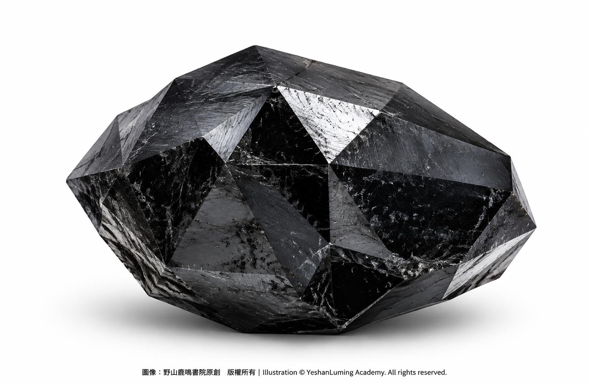
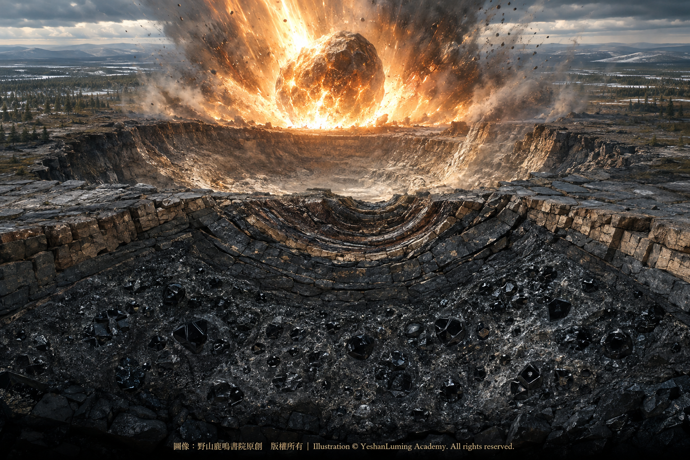

鑽石中的黑馬·《黑色鑽石》真的來自外太空？The Dark Horse of the Diamond World · Do “Black Diamonds” Really Come from Outer Space?
The World of Gemstones · Diamond SeriesThe Dark Horse of the Diamond World · Do “Black Diamonds” Really Come from Outer Space?
The World of Gemstones · Diamond Series鑽石中的黑馬·《黑色鑽石》真的來自外太空？
寶石世界·鑽石篇
寶石世界·鑽石篇（112）The World of Gemstones · Diamond Series (112)
我們在前面兩篇文章中談到了鑽石從哪裡來的問題。鑽石不僅可以由金伯利岩帶到地表，也可以存在於鉀鎂煌斑岩之中。這項發現，拓寬了人類尋找鑽石礦床的範圍，也極大地豐富了地質學、礦物學與寶石學的知識體系。
其實，除了由金伯利岩與鉀鎂煌斑岩帶到地表的鑽石之外，自然界中還存在一類極為特殊的黑色鑽石集合體——碳金剛石（Carbonado）。
它外表漆黑，結構疏鬆多孔，沒有傳統白色鑽石那種晶瑩剔透的外觀，也缺少透明鑽石內部五彩繽紛的火彩。可是，它所蘊藏的力量、它為人類文明作出的貢獻，以及它帶給人類的想像與情感衝擊，絲毫不亞於任何一顆昂貴的寶石級鑽石。
碳金剛石的來源非常神祕。有人認為，它可能形成於地球深部；有人認為，它可能與遠古隕石撞擊有關；還有人提出，它也許形成於太陽系誕生以前的星際環境，後來隨著天體物質來到地球。
直到今天，碳金剛石究竟來自地球深處，還是來自遙遠的外太空，科學界仍然沒有作出最後的定論。
這種爭議，反而使黑色鑽石成為鑽石家族中最神祕、最富有傳奇色彩的黑馬。
不過，寶石市場上所說的「黑鑽」，並不全部都是碳金剛石。
有些天然黑鑽仍然是單晶鑽石，只是因為內部含有大量深色礦物包裹體、石墨或密集裂隙，使光線難以穿透，因而呈現黑色。市場上還有一些經過人工處理而變黑的鑽石。
碳金剛石則完全不同。它不是一顆普通的黑色單晶鑽石，而是由大量微小鑽石晶粒緊密結合而成的天然多晶集合體。它的內部具有許多孔隙，不同晶粒的排列方向彼此交錯，因此不存在貫穿整個多晶集合體的單一解理面。
我們在前面兩篇文章中談到了鑽石從哪裡來的問題。鑽石不僅可以由金伯利岩帶到地表，也可以存在於鉀鎂煌斑岩之中。這項發現，拓寬了人類尋找鑽石礦床的範圍，也極大地豐富了地質學、礦物學與寶石學的知識體系。
其實，除了由金伯利岩與鉀鎂煌斑岩帶到地表的鑽石之外，自然界中還存在一類極為特殊的黑色鑽石集合體——碳金剛石（Carbonado）。
它外表漆黑，結構疏鬆多孔，沒有傳統白色鑽石那種晶瑩剔透的外觀，也缺少透明鑽石內部五彩繽紛的火彩。可是，它所蘊藏的力量、它為人類文明作出的貢獻，以及它帶給人類的想像與情感衝擊，絲毫不亞於任何一顆昂貴的寶石級鑽石。
碳金剛石的來源非常神祕。有人認為，它可能形成於地球深部；有人認為，它可能與遠古隕石撞擊有關；還有人提出，它也許形成於太陽系誕生以前的星際環境，後來隨著天體物質來到地球。
直到今天，碳金剛石究竟來自地球深處，還是來自遙遠的外太空，科學界仍然沒有作出最後的定論。
這種爭議，反而使黑色鑽石成為鑽石家族中最神祕、最富有傳奇色彩的黑馬。
不過，寶石市場上所說的「黑鑽」，並不全部都是碳金剛石。
有些天然黑鑽仍然是單晶鑽石，只是因為內部含有大量深色礦物包裹體、石墨或密集裂隙，使光線難以穿透，因而呈現黑色。市場上還有一些經過人工處理而變黑的鑽石。
碳金剛石則完全不同。它不是一顆普通的黑色單晶鑽石，而是由大量微小鑽石晶粒緊密結合而成的天然多晶集合體。它的內部具有許多孔隙，不同晶粒的排列方向彼此交錯，因此不存在貫穿整個多晶集合體的單一解理面。
常規的珠寶級鑽石通常是單晶體。它雖然具有自然界最高等級的硬度，卻也有非常明顯的解理方向。如果沿著特定的解理方向受到猛烈撞擊，再昂貴的鑽石也可能瞬間碎裂。
碳金剛石卻不容易沿著一個固定方向整體破裂。它的多晶結構使外來的衝擊力被不同方向的微小晶粒分散，因此具有極高的韌性與耐磨性。
當它表面的微小晶粒在使用中磨損或脫落時，還可能暴露出新的鋒利晶面，形成某種程度的自銳性。正因如此，在碳金剛石的宇宙來源假說出現以前，人類早已把它大規模用於鑽探和切削。
1841年，巴西首次留下碳金剛石受到正式辨認和命名的記錄。由於它的外表漆黑，酷似燃燒以後留下的木炭，人們便把它稱為Carbonado。這個名稱來自葡萄牙語，具有燒焦或炭化的含義。
起初，人們並不把這些外表粗糙、沒有透明度、看不見火彩的黑色石頭當成珍貴寶石。但是，人類很快就發現，它竟然是鑽探堅硬岩層的利器。
在巴拿馬運河等大型工程的岩層鑽探中，巴西碳金剛石曾被鑲嵌在鑽頭上，成為當時極為珍貴的工業材料。早期礦山勘探、深井鑽探、地質取芯和石材切割，也曾大量借助它超凡的韌性與耐磨性。
在珠寶商的眼中，它也許只是一塊漆黑、粗糙、難以琢磨的石頭；但是在工程師的手中，它卻可以穿透岩層，開鑿隧道，尋找礦藏，幫助人類向地球深處挺進。
黑色鑽石的故事，並沒有停留在地球深處。
除了來源成謎的碳金剛石，地球上還存在另一類與外太空有直接關係的鑽石——撞擊鑽石。
撞擊鑽石並不是隕石從宇宙中直接帶來的鑽石，而是小行星或其他天體高速撞擊地球時，在極短時間內產生難以想像的高溫與高壓，使地球岩層中的碳質物質瞬間轉化而成的鑽石。
大約3570萬年前，一顆小行星猛烈撞擊今天俄羅斯西伯利亞北部的波皮蓋地區，形成了一個直徑大約100公里的巨大隕石坑。
撞擊發生的一瞬間，地面如同遭到一場超乎人類想像的巨大爆炸。極端的高溫與高壓，使當地岩層中的大量石墨轉化成撞擊鑽石，形成了地球上已知最龐大的鑽石資源之一。
這就是著名的波皮蓋隕石坑（Popigai Crater）。

Click to enlarge
蘇聯科學家在20世紀70年代確認了這座龐大的撞擊鑽石礦床，相關資料此後一度被列入保密範圍。直到多年以後，這座沉睡在西伯利亞荒原上的巨大鑽石寶庫，才逐漸為外界所知。
有些報道認為，蘇聯政府之所以長期保守這個祕密，是擔心數量驚人的波皮蓋鑽石衝擊當時的世界鑽石市場。但是，這並不是唯一可以確定的原因。
波皮蓋地區極端偏遠，氣候惡劣，交通困難，開採成本極高。與此同時，蘇聯當時已經能夠大量生產人造工業鑽石，因此也沒有必要立即投入巨大的資金，開採這座遠離工業中心的天然礦床。
研究顯示，部分波皮蓋撞擊鑽石的研磨性能，可以達到普通單晶鑽石的1.5至2倍。它們在超硬磨料、精密加工和特殊切削工具方面，具有極大的潛在價值。
但是，由於礦區偏遠、開採昂貴，再加上現代人造鑽石的品質不斷提高、成本不斷下降，波皮蓋至今仍然沒有成為大規模商業開採的鑽石產地。
波皮蓋撞擊鑽石雖然形成於地球岩層，卻是外太空天體撞擊地球的直接產物。從這個意義上說，它們的誕生，是地球與宇宙發生猛烈碰撞後留下的結晶。
然而，還有另外一類鑽石，可能真正誕生於太陽系形成以前。
1987年，科學家從原始隕石中分離出大量直徑只有幾奈米的鑽石顆粒。它們小得令人難以想像，必須借助最先進的科學儀器，才能被人類辨認和研究。
科學家通過分析這些奈米鑽石所攜帶的氙、氪等惰性氣體同位素異常，確認其中至少一部分形成於太陽系誕生以前。
太陽系大約形成於45.7億年前。這意味著，這些微小的奈米鑽石，比太陽、地球以及太陽系中的所有行星都更加古老。
不過，由於這些奈米鑽石實在太小，科學家通常無法對每一顆微粒直接進行精確的絕對年齡測定。因此，我們可以確定其中至少一部分屬於前太陽系物質，卻不宜把所有隕石奈米鑽石都寫成具有完全相同的年齡。
它們中的一部分，可能形成於古老恆星的外流物或超新星爆發產物之中。那些早已消失的恆星，把包含碳元素在內的物質噴入星際空間，形成星際塵埃。後來，這些古老物質進入孕育太陽系的原始星雲，最終被包裹在小行星和隕石之中。
經過數十億年的漫長漂泊，一些攜帶奈米鑽石的隕石墜落到地球，最後被人類找到。
這些肉眼根本無法看見的微小鑽石，彷彿來自遠古宇宙的信使。它們幫助人類突破地球的視野限制，追尋太陽系誕生以前的恆星演化、元素形成與星際物質循環之謎。
天文學家還在少數年輕恆星周圍的星周盤或原行星盤中，觀測到可能與奈米鑽石表面碳氫鍵有關的紅外線光譜特徵。
這些發現並不能證明地球上的碳金剛石一定來自外太空，卻向人類揭示了一個更加廣闊的事實：在某些特殊的星際與星周環境中，碳元素確實可能結晶成鑽石。
鑽石也許並不是地球獨有的寶物。
科學家根據高壓物理模型和實驗推測，在天王星和海王星等冰巨星的內部，極端的高溫與高壓可能分解富含碳的化合物，使碳原子結晶成鑽石，然後像雨一樣向行星深處沉降。
人類還沒有派遣探測器親眼看到天王星和海王星內部的「鑽石雨」，但是相關實驗正在不斷增強這種推論的可能性。
在人類居住的地球上，一顆鑽石往往象徵稀有與昂貴；可是在浩瀚的宇宙中，也許有些遙遠的星球正在下著鑽石雨。
隨著碳金剛石地外起源假說受到科學界、媒體與珠寶市場的廣泛關注，黑色鑽石在人類奢侈品與文化領域的地位，也發生了一場令人驚訝的逆襲。
它從一種不受傳統珠寶市場重視的工業材料，逐漸變成現代暗黑美學的圖騰；從一塊缺少透明度和火彩的黑色石頭，變成了連接遠古宇宙與現代人類想像的神祕寶石。
由於黑色鑽石不透明，缺少傳統白鑽明亮清澈的內部火彩，它曾長期不受主流珠寶市場重視。圍繞少數著名黑鑽，還逐漸衍生出詛咒、厄運與神祕力量的傳說。
但是，進入21世紀以後，隨著碳金剛石可能具有地外來源的假說廣泛傳播，黑鑽的文化敘事被重新塑造了。
佩戴黑鑽，不再被解釋為接近黑暗、厄運與詛咒，而是被賦予了神祕、力量、獨立和宇宙浪漫的新意義。
商業宣傳甚至告訴人們：當你佩戴一顆黑鑽時，你佩戴的也許是一段比人類文明更加久遠、甚至比太陽系更加古老的宇宙傳奇。
從嚴格的科學角度來說，我們還不能證明一顆佩戴在手指上的黑鑽，就是從外太空墜落到地球的隕石碎片。但是，這種充滿想像力的宇宙敘事，確實擊中了現代人類對未知世界、星際旅行和浩瀚宇宙的嚮往。
2022年，一顆重達555.55克拉、名為「謎（The Enigma）」的稀世碳金剛石，在蘇富比拍賣會上以大約316萬英鎊成交。
它被琢磨成55個切面，設計靈感來自中東文化中的「法蒂瑪之手（Hamsa）」。數字五在這顆黑鑽的重量、切面與文化設計中反覆出現，更增加了它的神祕色彩。
拍賣方特別強調了碳金剛石可能具有地外起源的假說，使這顆巨大的黑色鑽石更增添了一層來自宇宙的傳奇。但是從科學角度來說，它的真正形成來源，至今仍然沒有得到最後確認。
現代許多年輕人在選擇婚戒或高端珠寶時，開始有意避開象徵傳統體制與純潔無瑕的白色鑽石，轉而選擇充滿個性、神祕感和宇宙想像的黑色鑽石。
它代表了一種對傳統寶石美學的反叛。
白色鑽石追求晶瑩、純淨與燦爛；黑色鑽石卻接受內含物、裂隙、不透明與深沉。它不再把毫無瑕疵當成唯一的美，而是把曾經被視為缺陷的特徵，轉化成了自己的個性與力量。
它也把人類對「永恆」的想像，從地球深處的地函，一直延伸到了無邊無際的星空。
如果說，金伯利岩鑽石與人類的關係，是權力、財富與純潔的世俗象徵；鉀鎂煌斑岩鑽石與人類的關係，是突破傳統找礦疆界、揭示地球深部的奧祕；那麼碳金剛石、撞擊鑽石與前太陽系奈米鑽石，則把鑽石的故事從地球深處，一直延伸到了浩瀚宇宙。
它們與人類的關係，是極致的力量——化作鑽頭，穿透最堅硬的岩層；是極致的智慧——幫助科學家追尋太陽系誕生以前的物質記憶；也是極致的浪漫——讓人類把一顆黑色寶石，想像成佩戴在手指上的宇宙傳奇。
它們讓人類意識到，我們與宇宙之間，並不存在一條真正不可跨越的物質界線。
構成我們身體的碳，構成鑽石的碳，構成古老恆星與星際塵埃的碳，本來就來自同一個浩瀚宇宙。
正如著名天文學家卡爾·薩根所說：「我們都是由星塵構成的。」
而那些漆黑、堅韌、神祕，甚至可能帶著遠古宇宙記憶的鑽石，正是這句話最富有力量，也最富有浪漫色彩的物質見證。
（未完待續）
In the previous two articles, we explored the question of where diamonds come from. Diamonds can not only be carried to the Earth’s surface by kimberlite, but can also occur in lamproite. This discovery has broadened the scope of diamond exploration and greatly enriched the collective knowledge of geology, mineralogy, and gemology.
In fact, besides the diamonds brought to the surface by kimberlite and lamproite, nature has created another extraordinarily unusual form of black diamond aggregate—carbonado.
Black in appearance and porous in structure, carbonado possesses neither the crystalline transparency of a traditional white diamond nor the rainbow-colored fire seen within a transparent gem. Yet the power it contains, the contribution it has made to human civilization, and the imaginative and emotional impact it has exerted are no less remarkable than those of any costly gem-quality diamond.
The origin of carbonado remains deeply mysterious. Some scientists believe that it may have formed deep within the Earth; others suggest that it may be connected with ancient meteorite impacts; still others propose that it could have originated in an interstellar environment before the birth of the solar system and later reached the Earth within extraterrestrial material.
Even today, scientists have not reached a final conclusion as to whether carbonado came from the depths of the Earth or from the distant reaches of outer space.
That very controversy has made the black diamond the most mysterious and legendary dark horse in the entire diamond family.
Not every stone described as a “black diamond” in the gemstone market, however, is carbonado.
Some natural black diamonds are still single-crystal diamonds. They appear black because they contain large concentrations of dark mineral inclusions, graphite, or densely distributed fractures that prevent light from passing through them. The market also contains diamonds that have been artificially treated to produce a black appearance.
Carbonado is entirely different. It is not an ordinary black single-crystal diamond, but a natural polycrystalline aggregate composed of countless tiny diamond grains tightly bonded together. Its interior contains numerous pores, while its individual grains are oriented in different and intersecting directions. As a result, no single cleavage plane extends through the entire polycrystalline mass.
In the previous two articles, we explored the question of where diamonds come from. Diamonds can not only be carried to the Earth’s surface by kimberlite, but can also occur in lamproite. This discovery has broadened the scope of diamond exploration and greatly enriched the collective knowledge of geology, mineralogy, and gemology.
In fact, besides the diamonds brought to the surface by kimberlite and lamproite, nature has created another extraordinarily unusual form of black diamond aggregate—carbonado.
Black in appearance and porous in structure, carbonado possesses neither the crystalline transparency of a traditional white diamond nor the rainbow-colored fire seen within a transparent gem. Yet the power it contains, the contribution it has made to human civilization, and the imaginative and emotional impact it has exerted are no less remarkable than those of any costly gem-quality diamond.
The origin of carbonado remains deeply mysterious. Some scientists believe that it may have formed deep within the Earth; others suggest that it may be connected with ancient meteorite impacts; still others propose that it could have originated in an interstellar environment before the birth of the solar system and later reached the Earth within extraterrestrial material.
Even today, scientists have not reached a final conclusion as to whether carbonado came from the depths of the Earth or from the distant reaches of outer space.
That very controversy has made the black diamond the most mysterious and legendary dark horse in the entire diamond family.
Not every stone described as a “black diamond” in the gemstone market, however, is carbonado.
Some natural black diamonds are still single-crystal diamonds. They appear black because they contain large concentrations of dark mineral inclusions, graphite, or densely distributed fractures that prevent light from passing through them. The market also contains diamonds that have been artificially treated to produce a black appearance.
Carbonado is entirely different. It is not an ordinary black single-crystal diamond, but a natural polycrystalline aggregate composed of countless tiny diamond grains tightly bonded together. Its interior contains numerous pores, while its individual grains are oriented in different and intersecting directions. As a result, no single cleavage plane extends through the entire polycrystalline mass.
Conventional gem-quality diamonds are usually single crystals. Although diamond possesses the highest degree of hardness found in nature, it also has well-defined cleavage directions. If struck violently along one of those directions, even the most expensive diamond can shatter in an instant.
Carbonado, by contrast, does not easily break apart along any single fixed direction. Its polycrystalline structure distributes an external impact among tiny grains oriented in many different directions, giving it exceptional toughness and resistance to wear.
When tiny grains on its surface become worn or break away during use, new sharp crystal surfaces may be exposed, giving the material a certain degree of self-sharpening ability. For this reason, long before anyone proposed that carbonado might have come from outer space, humanity had already begun using it extensively for drilling and cutting.
In 1841, the first formal record of carbonado being identified and named appeared in Brazil. Because its black exterior resembled charcoal left behind after burning, it came to be known as carbonado. Derived from Portuguese, the name carries the meaning of something burned or carbonized.
At first, people did not regard these rough, opaque black stones without visible fire as precious gems. They soon discovered, however, that carbonado was an extraordinarily effective tool for drilling through hard rock.
In major engineering works such as the Panama Canal, Brazilian carbonado was once set into drill bits and became an extremely valuable industrial material. Early mineral exploration, deep-well drilling, geological core sampling, and stone cutting also relied heavily upon its extraordinary toughness and resistance to wear.
In the eyes of a jeweler, it might once have appeared to be nothing more than a black, rough, and almost unworkable stone; in the hands of an engineer, however, it could penetrate rock, excavate tunnels, locate mineral deposits, and help humanity advance into the depths of the Earth.
The story of the black diamond did not end beneath the Earth’s surface.
Besides carbonado, whose origin remains unresolved, there is another kind of diamond that has a direct connection with outer space—the impact diamond.
Impact diamonds are not diamonds carried directly from outer space by meteorites. They are created when an asteroid or another celestial body strikes the Earth at tremendous speed, generating unimaginable heat and pressure within an extremely brief moment and instantly transforming carbon-bearing material in the Earth’s rocks into diamond.
Approximately 35.7 million years ago, an asteroid struck what is now the Popigai region of northern Siberia in Russia with tremendous force, creating an enormous impact crater approximately one hundred kilometers in diameter.
At the moment of impact, the ground experienced an explosion on a scale almost beyond human imagination. The extreme heat and pressure transformed immense quantities of graphite in the local rocks into impact diamonds, producing one of the largest known diamond resources on Earth.
This is the celebrated Popigai Crater.
Click to enlarge
Soviet scientists confirmed the existence of this enormous impact-diamond deposit during the 1970s, after which information about it was classified for a period of time. Only many years later did this immense diamond treasure, sleeping beneath the Siberian wilderness, gradually become known to the outside world.
Some reports have suggested that the Soviet government kept the discovery secret for so long because it feared that the astonishing quantity of Popigai diamonds would disrupt the global diamond market of the time. That explanation, however, cannot be regarded as the only firmly established reason.
The Popigai region is extraordinarily remote, with a severe climate, difficult transportation, and extremely high mining costs. At the same time, the Soviet Union was already capable of producing large quantities of synthetic industrial diamonds and therefore had little reason to invest vast sums immediately in developing a natural deposit so far removed from its industrial centers.
Research indicates that the abrasive performance of some Popigai impact diamonds may reach 1.5 to 2 times that of ordinary single-crystal diamond. They possess tremendous potential for use in superhard abrasives, precision manufacturing, and specialized cutting tools.
Nevertheless, because the deposit is remote and costly to mine, and because modern synthetic diamonds continue to improve in quality while declining in cost, Popigai has still not become a source of diamonds mined on a large commercial scale.
Although Popigai impact diamonds formed within rocks on Earth, they are the direct products of a celestial body from outer space colliding with our planet. In this sense, their birth is the crystallized legacy of a violent encounter between the Earth and the cosmos.
There is, however, yet another kind of diamond that may truly have been born before the solar system itself.
In 1987, scientists separated vast numbers of diamond grains only a few nanometers in diameter from primitive meteorites. They are almost unimaginably small and can be identified and studied only with the aid of the most advanced scientific instruments.
By analyzing anomalies in the isotopes of xenon, krypton, and other noble gases carried by these nanodiamonds, scientists confirmed that at least some of them had formed before the birth of the solar system.
The solar system formed approximately 4.57 billion years ago. This means that these minute nanodiamonds are older than the Sun, the Earth, and every planet within the solar system.
Because these nanodiamonds are so extraordinarily small, however, scientists are generally unable to determine a precise absolute age for every individual particle. We can therefore confirm that at least some of them are presolar material, but we should not assume that all meteoritic nanodiamonds share exactly the same age.
Some of them may have formed in the outflows of ancient stars or within material ejected by supernova explosions. Those long-vanished stars expelled carbon and other matter into interstellar space, where it became part of the interstellar dust. These ancient materials later entered the primordial nebula from which the solar system was born and were eventually enclosed within asteroids and meteorites.
After drifting through space for billions of years, some of the meteorites carrying these nanodiamonds fell to Earth and were finally discovered by human beings.
These tiny diamonds, utterly invisible to the naked eye, are like messengers from the ancient cosmos. They allow humanity to look beyond the limits of the Earth and investigate the mysteries of stellar evolution, elemental formation, and the circulation of interstellar matter before the birth of the solar system.
Astronomers have also detected infrared spectral features around a small number of young stars that may be associated with carbon-hydrogen bonds on the surfaces of nanodiamonds within circumstellar or protoplanetary disks.
These discoveries do not prove that carbonado on Earth necessarily came from outer space. They do, however, reveal a much broader truth: under certain unusual interstellar and circumstellar conditions, carbon can indeed crystallize into diamond.
Diamonds may not be treasures unique to the Earth.
On the basis of high-pressure physical models and laboratory experiments, scientists have proposed that, deep inside ice giants such as Uranus and Neptune, extreme heat and pressure may break down carbon-rich compounds, allowing carbon atoms to crystallize into diamonds and then descend like rain into the planets’ interiors.
Humanity has not yet sent a probe capable of witnessing the “diamond rain” inside Uranus or Neptune, but continuing experiments are steadily strengthening the plausibility of this hypothesis.
On the Earth inhabited by humanity, a diamond often represents rarity and great value; somewhere in the immensity of the cosmos, however, distant planets may be experiencing showers of diamonds.
As the hypothesis of an extraterrestrial origin for carbonado attracted widespread attention from scientists, the media, and the gemstone market, the position of black diamonds within the worlds of luxury and culture underwent an astonishing reversal.
From an industrial material long disregarded by the traditional jewelry market, the black diamond gradually became an emblem of modern dark aesthetics; from an opaque black stone without fire, it was transformed into a mysterious gem connecting the ancient universe with the imagination of modern humanity.
Because black diamonds are opaque and lack the brilliant, transparent internal fire of traditional white diamonds, they were long neglected by the mainstream jewelry market. Legends of curses, misfortune, and mysterious powers also gradually developed around a small number of famous black diamonds.
After the beginning of the twenty-first century, however, the widespread circulation of the hypothesis that carbonado might have an extraterrestrial origin reshaped the cultural narrative of the black diamond.
Wearing a black diamond was no longer interpreted as drawing close to darkness, misfortune, and curses. Instead, it acquired new associations with mystery, strength, independence, and cosmic romance.
Commercial publicity went so far as to tell people that, when they wore a black diamond, they might be wearing a cosmic legend far older than human civilization and perhaps even older than the solar system itself.
From a strictly scientific perspective, we still cannot prove that a black diamond worn upon someone’s finger is a fragment of a meteorite that fell to Earth from outer space. Yet this imaginative cosmic narrative has undeniably touched the modern human longing for unknown worlds, interstellar travel, and the infinite universe.
In 2022, an exceptional carbonado weighing 555.55 carats and known as “The Enigma” was sold at Sotheby’s for approximately £3.16 million.
It was fashioned with 55 facets, and its design was inspired by the Hamsa, also known as the Hand of Fatima, in Middle Eastern culture. The repeated appearance of the number five in the diamond’s weight, its facets, and its cultural design further intensified its aura of mystery.
The auction house placed particular emphasis on the hypothesis that carbonado might have an extraterrestrial origin, adding yet another layer of cosmic legend to this enormous black diamond. From a scientific perspective, however, its true origin has still not been conclusively established.
When selecting engagement rings or high-end jewelry, many young people today deliberately turn away from white diamonds, with their associations of traditional institutions and immaculate purity, and choose instead black diamonds filled with individuality, mystery, and cosmic imagination.
The black diamond represents a rebellion against traditional gemstone aesthetics.
White diamonds aspire to brilliance, purity, and radiance; black diamonds embrace inclusions, fractures, opacity, and depth. They reject the belief that flawlessness is the only form of beauty and transform characteristics once regarded as defects into expressions of individuality and strength.
They also extend humanity’s conception of “eternity” from the mantle deep within the Earth to the boundless reaches of the stars.
If humanity’s relationship with diamonds carried to the surface by kimberlite is expressed through the worldly symbols of power, wealth, and purity, and its relationship with diamonds found in lamproite lies in breaking through the traditional boundaries of diamond exploration and revealing the mysteries of the deep Earth, then carbonado, impact diamonds, and presolar nanodiamonds carry the story of diamonds from the depths of our planet into the immensity of the cosmos.
Their relationship with humanity is one of ultimate strength—becoming drill bits that penetrate the hardest rock; of ultimate wisdom—helping scientists pursue the material memories of a time before the solar system was born; and of ultimate romance—allowing human beings to imagine a black gemstone as a cosmic legend worn upon the finger.
They make humanity realize that no truly impassable material boundary exists between ourselves and the universe.
The carbon that forms our bodies, the carbon that forms diamonds, and the carbon that forms ancient stars and interstellar dust all came from the same immense universe.
As the celebrated astronomer Carl Sagan said, “We are made of star-stuff.”
And those black, tenacious, mysterious diamonds, some of which may even carry memories of the ancient cosmos, are among the most powerful and romantic material witnesses to that truth.
(To be continued)